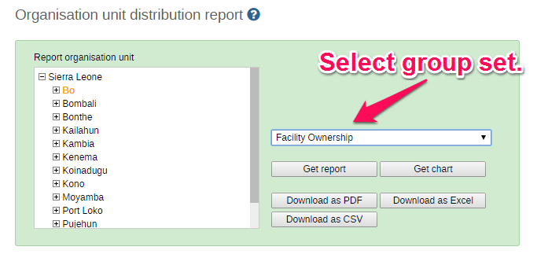

You can access the Orgunit Distribution reports from the left side menu in the Services->Reports module.
Orgunit distribution reports are reports that show how the orgunits are distributed on various properties like type and ownership, and by geographical areas.
The result can be presented in a table-based report or in a chart.
Running a report:
To run a report first select an orgunit in the upper left side orgunit tree. The report will be based on orgunits located under the selected orgunit. The select the orgunit group set that you want to use, typically these are Type, Ownership, Rural/Urban, but can be any user-defined orgunit group set. The you can click on either Get Report to get the table-based presentation or Get chart to get the same result in a chart. You can also download other format such as PDF, Excel and CSV.
|  |